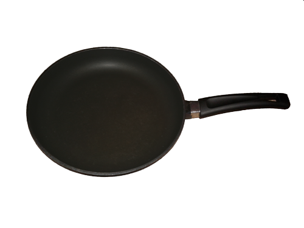
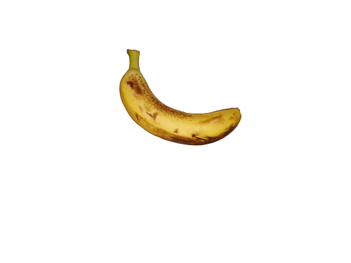
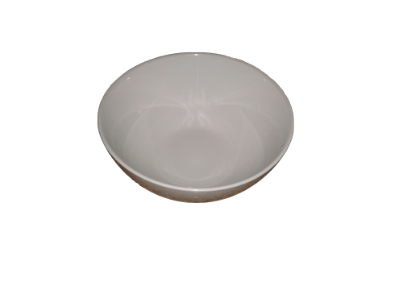
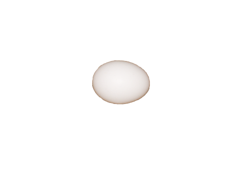
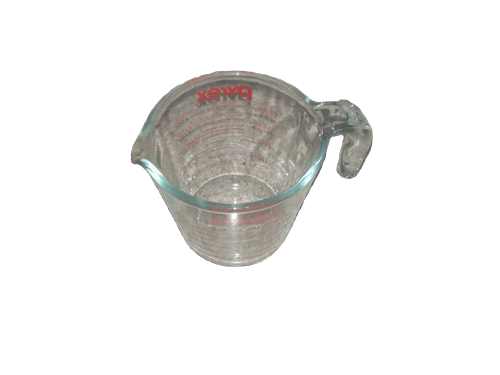
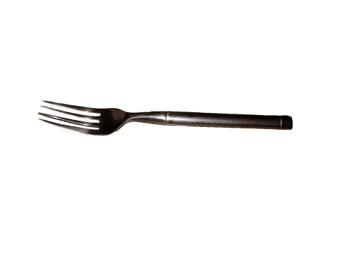

GLUTEN-FREE 2 INGREDIENT PANCAKES
Ingredients:
Directions:






- Put banana in the bowl and smash it with the fork.
- Crack the egg, pour it over another bowl, and whish it with the fork.
- Pour the egg into the bowl with the banana and mix it together.
- **OPTIONAL: Add cinammon to the mixture for more flavor.
- Put the pan on the stove and add olive oil/coconut oil/vegetable oil for the pancakes to not stick to the pan.
- Turn the stove on high.
- Wait 2 minutes for pan to heat up and then pour the mixture into the pan, making sure that you make several pancakes.
- **OPTIONAL: Lower the heat a little and then add blueberries on top of the pancakes.
- Wait around 2 minutes or less and flip the pancakes over.
- Turn off the stove and voila!